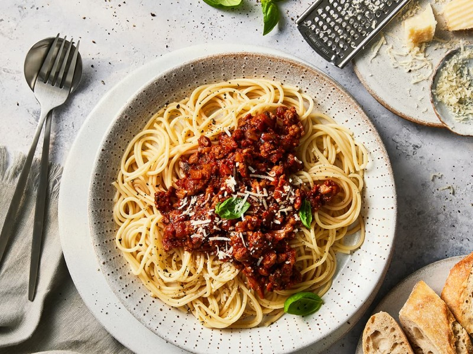

spaghetti bolognese

Description
Spaghetti Bolognese is a classic Italian dish known for its rich, meaty tomato sauce served over a bed of al dente spaghetti. The sauce, hailing from Bologna, Italy, traditionally combines ground meat (often beef, pork, or a mixture of the two) with onions, carrots, and celery (known as the "soffritto") sautéed in olive oil, then simmered with tomatoes and a splash of wine to create a deeply flavorful, hearty dish. Herbs like basil and oregano are added for freshness and aroma, while a touch of milk or cream is sometimes used to mellow the acidity of the tomatoes and enrich the sauce. Spaghetti Bolognese is beloved around the world, a testament to its comforting, satisfying nature, perfect for a family dinner or any occasion that calls for a warming, delicious meal.
The recipe
Ingredients
- 400g (14 oz) spaghetti
- 500g (1.1 lbs) ground beef
- 2 tablespoons olive oil
- 1 large onion, finely chopped
- 2 carrots, peeled and finely chopped
- 2 celery stalks, finely chopped
- 2 garlic cloves, minced
- 800g (28 oz) canned crushed tomatoes
- 1/2 cup red wine
- 1/2 cup milk (optional)
- 1 teaspoon dried oregano
- 1 teaspoon dried basil
- Salt and pepper, to taste
- Grated Parmesan cheese, to serve
- Fresh basil leaves, for garnish
Instructions
- Prepare the Vegetables:Heat the olive oil in a large skillet over medium heat. Add the chopped onions, carrots, and celery, cooking until they are soft and golden, about 5 minutes. Add the minced garlic and cook for an additional minute.
- Cook the Meat:Increase the heat to medium-high and add the ground beef to the skillet. Break the meat apart with a spatula and cook until browned and no longer pink. Season with salt and pepper.
- Deglaze with Wine:Pour the red wine into the skillet with the browned meat and vegetables. Allow the wine to simmer and reduce by half, scraping up any browned bits from the bottom of the pan.
- Add Tomatoes and Herbs: Stir in the crushed tomatoes, oregano, and basil. Reduce the heat to low and let the sauce simmer for at least 30 minutes, up to 2 hours if time allows, stirring occasionally. If using, add the milk during the last 30 minutes of cooking to enrich the sauce.
- Cook the Spaghetti: While the sauce simmers, bring a large pot of salted water to a boil. Add the spaghetti and cook according to package instructions until al dente. Drain the pasta and return it to the pot.
- Combine and Serve:Once the sauce has thickened and is rich in flavor, taste for seasoning, adjusting with more salt and pepper as needed. Pour the Bolognese sauce over the cooked spaghetti and toss to combine. Serve hot, garnished with grated Parmesan cheese and fresh basil leaves.